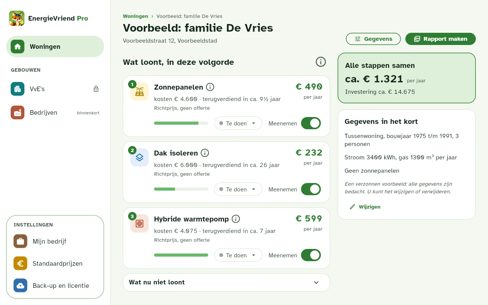
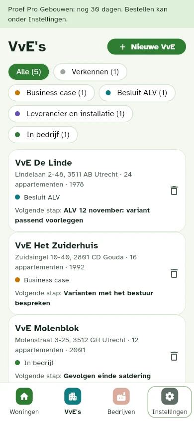
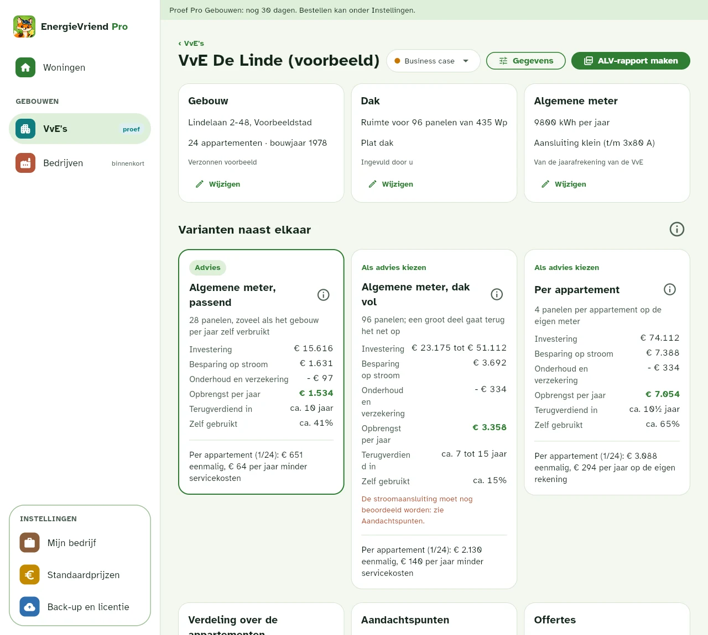
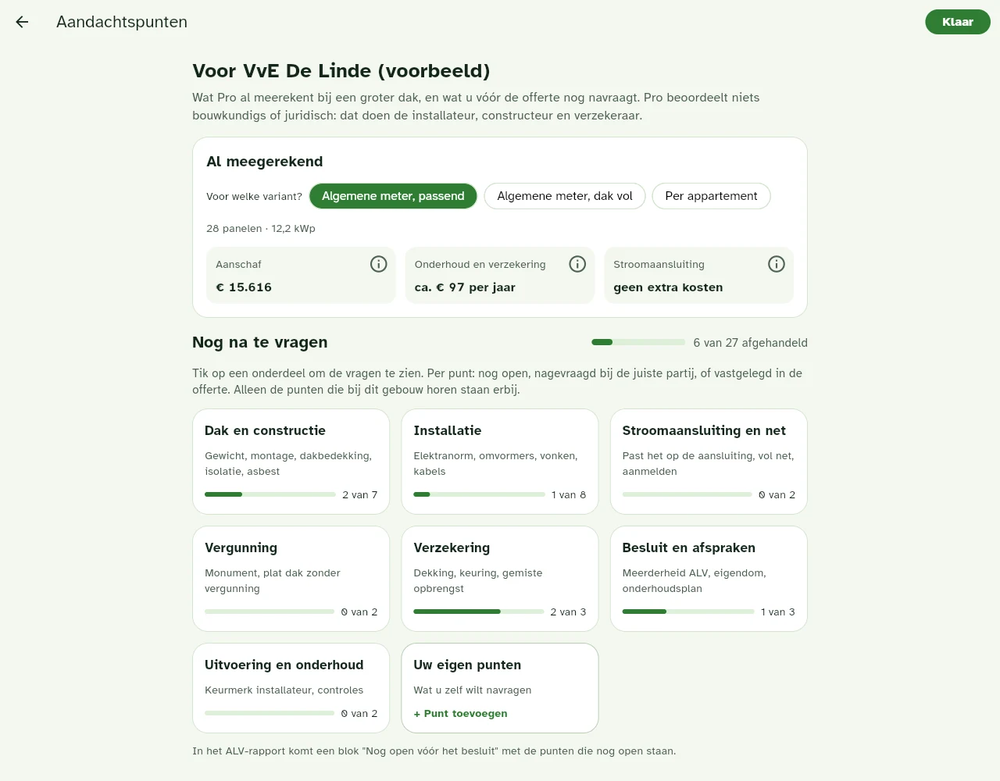
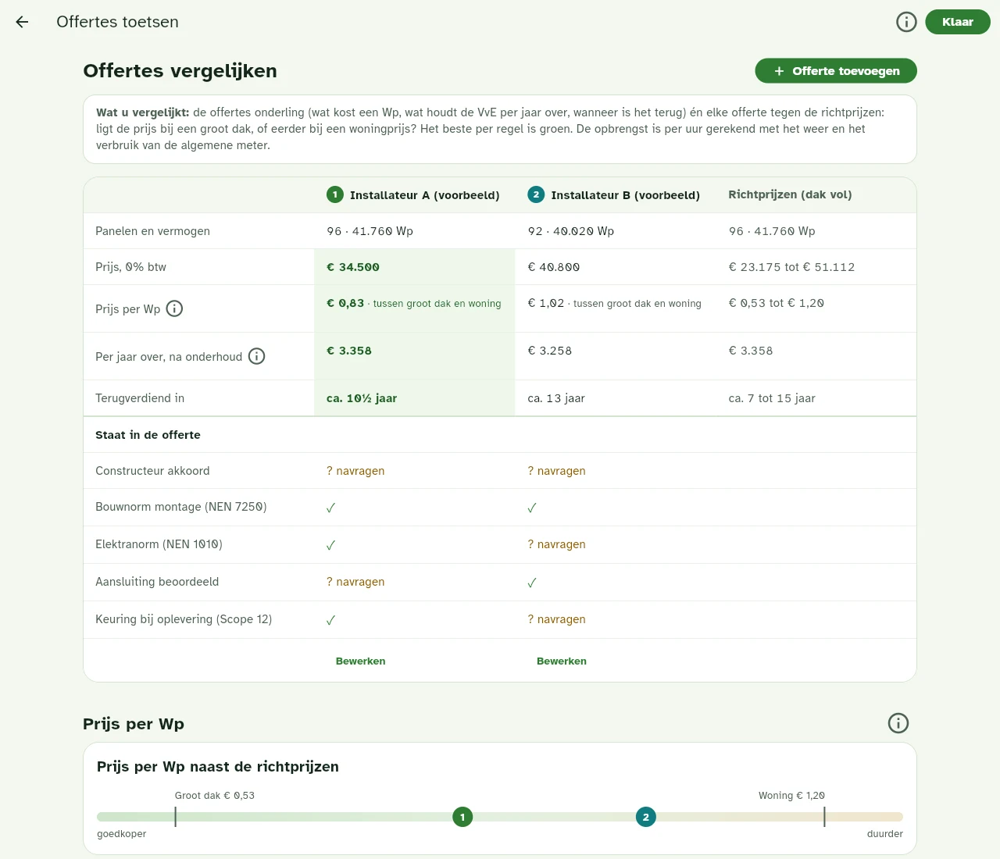
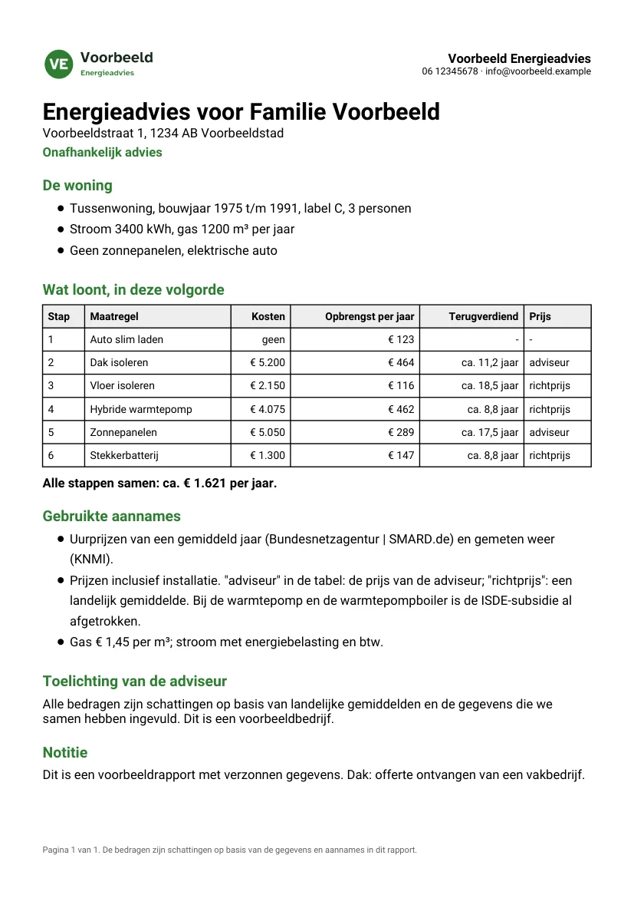

Energieadvies voor adviseurs en energiecoaches
Reken bij het huisbezoek uit wat er voor deze woning loont en in welke volgorde, met uw eigen prijzen. Geef uw klant daarna een rapport in uw eigen huisstijl. Ook voor zonnepanelen op het dak van een VvE.
- Geen account, geen cloud
- Uw prijzen, uw logo
- Op laptop, tablet en telefoon
Voor wie is dit? EnergieVriend Pro is voor professionals die voor anderen rekenen: u adviseert de bewoner van een woning, of het bestuur van een VvE. Wilt u zelf weten wat er loont voor uw eigen huis? Dan is er de app: EnergieVriend voor thuis.
Zelf uitzoeken met losse hulpmiddelen? Pro maakt er één plan van.
Veel adviseurs rekenen met losse hulpmiddelen: een check voor isolatie, een rekentool voor de batterij, een opbrengstberekening voor het dak en een eigen spreadsheet om het samen te voegen. Dat werkt, maar het kost tijd en de uitkomsten passen niet altijd op elkaar.
Stappen die op elkaar doorrekenen
Na een warmtepomp verandert wat zonnepanelen opleveren; na zonnepanelen verandert wat een batterij oplevert. Losse berekeningen tellen besparingen op die elkaar deels overlappen. Pro rekent elke stap door op de woning ná de vorige stap, uur voor uur.
Ook de vragen van na de saldering
Vanaf 2027 vraagt uw klant niet alleen naar isolatie en panelen, maar ook: loont een batterij, slim laden, een dynamisch contract? Pro zet dat in hetzelfde plan, naast isolatie, warmtepomp en boiler.
Uw prijzen, uw rapport
U rekent met uw eigen standaardprijzen of met het bedrag uit een offerte, niet met een landelijk gemiddelde. De klant krijgt een rapport met uw naam en logo. Het is uw advies, geen algemene uitdraai.
Klanten bewaren
Na het bezoek past u een bedrag of een keuze aan en het hele plan rekent opnieuw. U hoeft niets opnieuw in te vullen.
Wat Pro niet is: geen energielabel en geen gecertificeerd maatwerkadvies volgens NTA 8800. Heeft uw klant dat nodig, bijvoorbeeld voor subsidie of financiering, dan maakt u het met uw labelsoftware.
Zo ziet het eruit


Wat u er mee doet
Eén plan per klant
U vult de woning of de VvE van uw klant in en ziet direct wat er loont en in welke volgorde, wat het kost en wat het per jaar oplevert. Achter het ⓘ staat hoe er is gerekend.
Uw prijzen
Zet uw eigen standaardprijzen in, en vul per klant het bedrag uit een offerte in. U ziet of het uw prijs is of een richtprijs. Bij een VvE staat de offerteprijs naast de richtprijzen.
Uw rapport
Een PDF met uw naam, contactgegevens en logo, voor de klant of als ALV-rapport voor een VvE. "Onafhankelijk advies" staat er alleen op als u dat zelf aanzet.
Ook voor VvE's: Pro Gebouwen
Een opbrengstberekening voor het dak is snel gemaakt. Wat het bestuur wil weten, is lastiger: wat kost het per appartement, op de algemene meter of per appartement, en welke offerte is redelijk?
Met de uitbreiding Pro Gebouwen rekent u dat door zonder eigen spreadsheet, en maakt u er een rapport voor de ledenvergadering van, met een blad per appartement.
U probeert Pro Gebouwen 30 dagen, op het moment dat u het nodig heeft. Bedrijfsdaken komen er later bij.



Voorbeeldrapport

Zo ziet het rapport voor uw klant eruit, met een verzonnen klant en een verzonnen adviesbedrijf. Het logo, de naam en de toelichting zijn die van u.
Uw klantgegevens blijven bij u
Er is geen account en geen server van ons waar uw klantgegevens heen gaan. Alles staat in uw eigen browser. Wij kunnen er niet bij.
Omdat de gegevens alleen op uw apparaat staan, maakt u zelf af en toe een back-up. Die is standaard versleuteld met een wachtwoord dat u kiest. Pro herinnert u daar rustig aan.
Meer in het privacybeleid.
Eerlijk over de bedragen
De bedragen zijn schattingen op basis van gemiddelden en wat u zelf invult. Het is geen offerte en geen belofte van een besparing. U blijft verantwoordelijk voor het advies dat u uw klant geeft. Zie de gebruiksvoorwaarden.
Proberen en licentie
- U probeert Pro 30 dagen, zonder iets te betalen of aan te maken.
- Daarna werkt Pro met een licentie voor één adviseur of bedrijf, voor een jaar.
- Een jaarlicentie kost € 290 excl. btw (€ 350,90 incl. btw). Na een jaar verlengt u tegen de dan geldende prijs; dat gaat niet vanzelf.
- U bestelt de licentie op de bestelpagina en betaalt vooraf via Mollie. De licentiecode krijgt u direct te zien en per e-mail, en de factuur komt ook per e-mail. Een licentie is er alleen voor bedrijven en organisaties.
- Pro Gebouwen (VvE's) is een aparte jaarlicentie bovenop Pro. U vraagt die aan per e-mail; de prijs hoort u bij de aanvraag.